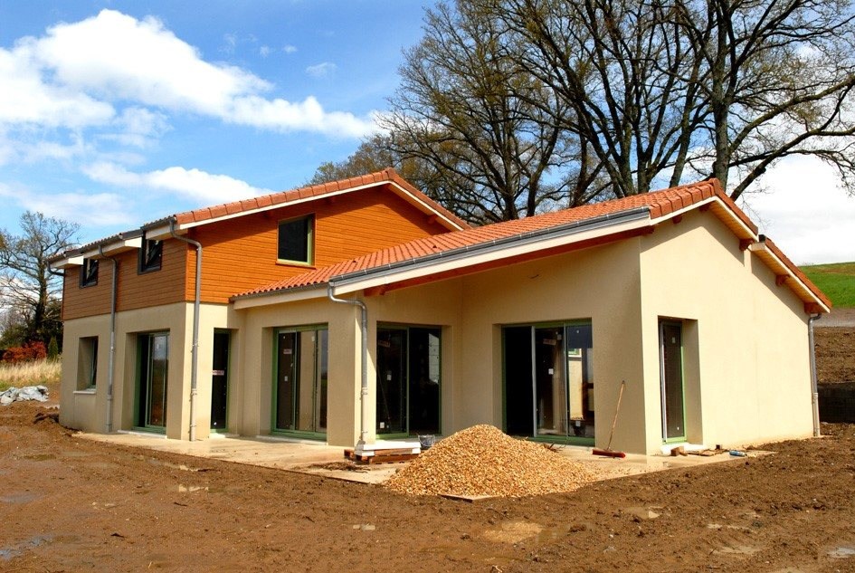
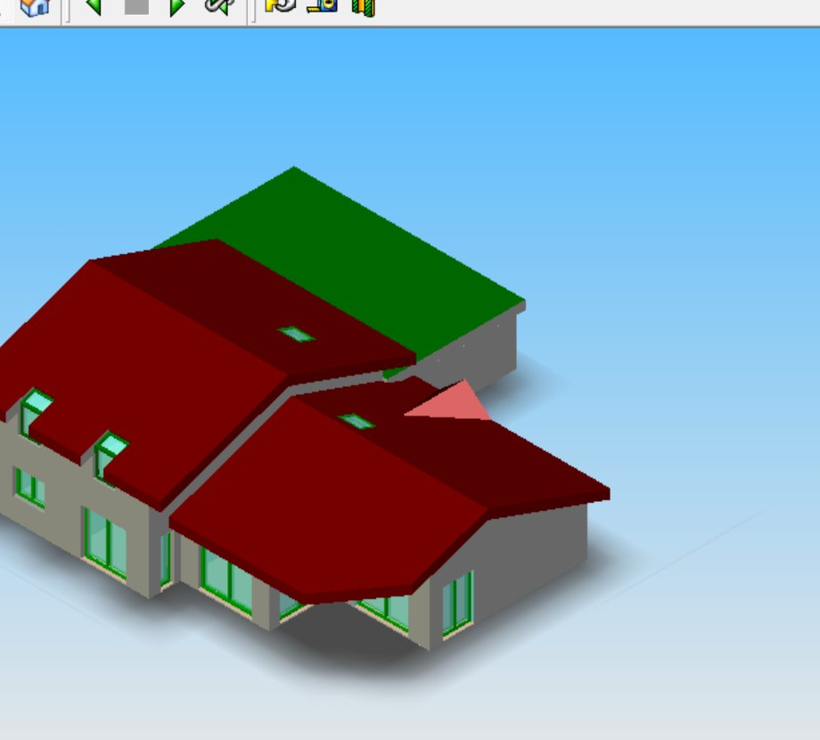
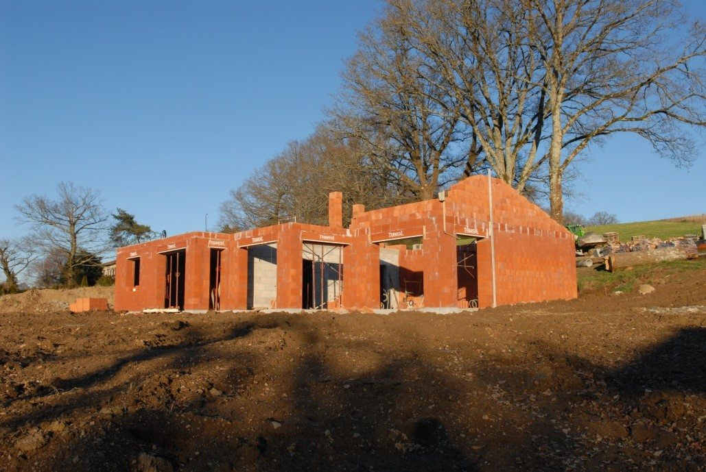

Lire un plan, modéliser un bâtiment, le chiffrer.
Bienvenue en Seconde EMNB. Ici tu retrouves toutes les séances de l'année : tu peux les faire en ligne, vérifier tes réponses et télécharger ta fiche synthèse.
Commencer par la séquence 1
18,10 m+6,30Ton parcours de l'année
-
Les acteurs et les phases de la construction
Quelle est ma place dans l'entreprise et quel est le rôle de chaque intervenant selon la phase du projet ?
Séquence SEQ01 Période Septembre Durée 8 h -
La lecture de plans
Comment lire et exploiter un dossier de plans pour identifier l'organisation d'un bâtiment, repérer ses dimensions réelles et analyser l'évolution du projet entre ses différentes phases ?
Séquence SEQ02 Période Septembre – Octobre Durée 8 h -
La maquette numérique IFC
Comment une maquette IFC permet-elle de répondre aux besoins d'information de chaque intervenant d'un projet ?
Séquence SEQ03 Période Novembre – Décembre Durée 8 h Économie de la construction
Cette séquence arrive plus tard dans l'année.
Séquence SEQ04 Période À venir Synthèse et projet
Cette séquence arrive plus tard dans l'année.
Séquence SEQ05 Période À venir
Du plan à la maison

